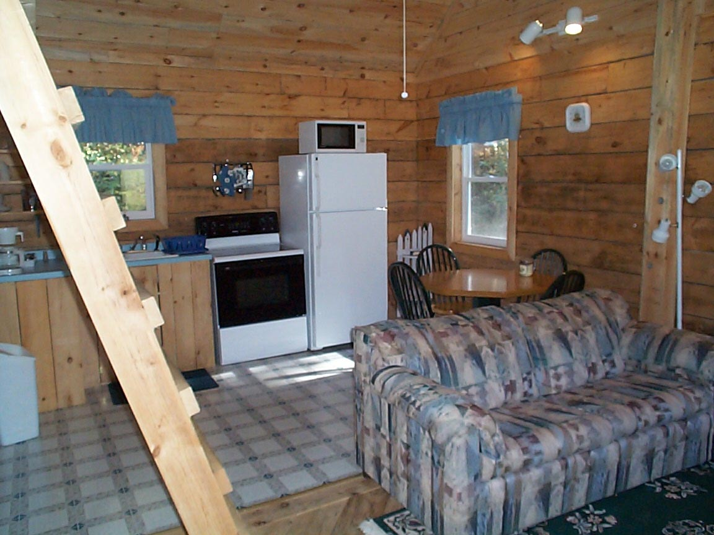
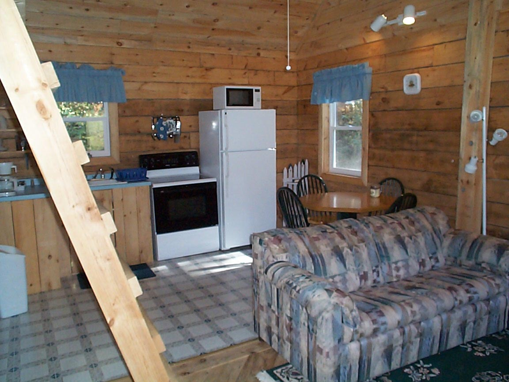

The Bird's Nest Cabin was built in 1999. The Bird's Nest, decorated in bird decor with outside feeders for bird lovers, is made from local white pine logs that we hand hewed with a drawknife, giving it a very unique look. This cutely decorated cabin has 1 bedroom (full size bed), plus 2 loft areas accessed by steps (2 twin beds in one loft and a double bed in the other loft). The large bathroom has a shower/tub and toilet, with the bathroom sink located in the hallway for easy access when the bathroom is being used. The living room/great room area has a cathedral ceiling, a fireplace, sofa, and a television for playing video tapes and DVD's (no reception). There is a kitchen with full size appliances with all of the dishes, utensils and cookware supplied. This cabin is great for outdoor fires, sitting on the porch and watching the birds, and just downright relaxing! Come and enjoy watching the humming birds and the Red necked Grosbeaks! (We permit pets in this cabin, with prior arrangements).
 
